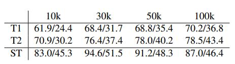
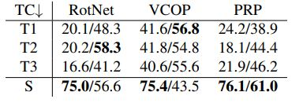
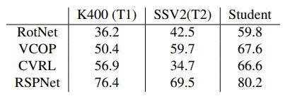
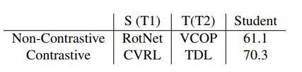
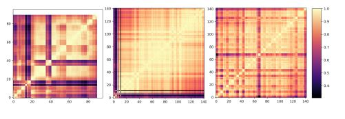

Knowledge distillation has been extensively studied with
respect to image networks, employing the idea of learning
under supervision from a larger, better-trained teacher network. Instead of leveraging a single teacher network, distilling knowledge from an ensemble of teacher networks is
supposed to achieve more promising performance.
We use our benchmark models as pre-trained
teachers in logical combinations, with the motive to investigate on four types of analysis:
- performance with different models as teachers for various subset sizes
- whether
teacher with different complexities within a pretext task
provide orthogonal information
- knowledge distillation from different pre-training datasets
- effect of teachers from multiple pretext tasks.
Pretraining Subset Size
Our first stream of experiments involved using KD teachers trained on a specific subset of
the pretraining dataset K-400. We use teachers pretrained
on the RSPNet pretext task, since the finetuning accuracies
for these were the best among all others. The motivation
behind the experiment was to observe if distillation using
teachers trained on a smaller subset could yield a gain in
performance, since this would reduce the training time and
compute required.
Using ShuffleNet as the student network,
and ShuffleNet and R(2+1)D pretrained on 10k, 30k, 50k
and 100k subsets as the teachers respectively, we evaluate
the performance of the student networks for classification
on UCF-101.

Table 1: KD using teachers trained on different subset sizes on
RSPNet. Student: ShuffleNet UCF101/HMDB51. Here T1 is
Teacher -1 (shufflenet) and T2-is teacher 2 (R21D).
From Table 1, we can see
that student outperforms the teacher in all cases for both
the datasets. The best performance is obtain on 30k subset.
Task Complexity
For the pretext tasks VCOP, PRP and
RSPNet (Table 2), we use benchmark models for multiple
complexities. It is imperative to investigate how networks
train on increasing complexity of the same task learn and
disseminate additional information, which a student network could take advantage of.
We ensemble three models corresponding to each of the pretext tasks, for both
ShuffleNet and R21D. Each ensemble consist of networks
trained on C1, C2, and C3 for the same task, keeping the
teacher and student architecture same.
Observations: In
case of PRP, R21D as a student outperforms teachers. CKA
maps for VCOP and RotNet for R21D student depict block
structures, indicative of its low performance. On the other
hand, ShuffleNet outperforms teacher for all pretext tasks.

Table 2: KD Complexity variation with different complexities as
teachers (T1, T2, T3) for all three pretext tasks. TC: Task com�plexity. Results are shown on UCF101 with ShuffleNet/R21D as
backbones.
Out-of-Distribution
We examine whether knowledge distillation from two different datasets helps in improving performance or not. We use finetuned weights on UCF101, pretrained on K400 and SSV2 respectively as the two teacher
networks for pretext tasks RotNet and VCOP.
Observations: For both RotNet and VCOP, we observe that the student network outperforms the teacher accuracies by an average of 20.5% and 12.6% respectively. This demonstrates that knowledge learned from both datasets is in fact, complementary in nature.

Table 3: KD OOD experiments on UCF101 dataset using R21D
network.
Pretext Task Categories
Finally, we look into knowledge distillation of teachers from multiple pretext task with
the same architecture. Here, the motivation is to analyze whether the combination of spatial and temporal pretext tasks as teachers learn complementary information
and outperform the standalone spatio-temporal pretext task
training. From non-contrastive tasks, we employ VCOP
and RotNet as teachers, and, similarly from contrastive,
CVRL and TDL. Observations: We see that student
network outperforms the standalone spatio-temporal pre-training for both contrastive and non-contrastive by a margin of +39.2% and +1.5% respectively on R21D backbone.

Table 4: KD across different Pretext Tasks. Teachers: ShuffleNet;
Student: ShuffleNet. ST refers to student without pretraining
Inferences
We derive the following conclusions from KD
experiments:
- KD helps in reduction of training subset
size
- Different complexities can help models learn complementary features
- Knowledge from different datasets
brings in complementary information
- Orthogonal features are learnt across different categories of pretext
tasks, and different architectures. Frm qualitative point of
view, we observe that student's CKA maps is perfectly symmetrical grid like plot (Fig. 1) with no block formations
which indicates no redundancy, and, thus, improve in performance over teachers.

Figure 1. CKA maps for layer representations: R21D-teacher,
ShuffleNet-teacher, and, Shufflenet-student for RSPNet 30k subset (Left to right).